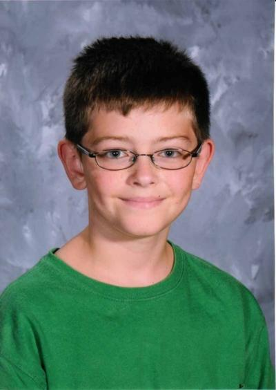

What We're About
The Anti Squirrel Campaign is all about setting the facts right. Every 20 seconds a child is misinformed about the dangers of squirrels. Squirrels have evil intentions that are hard to come by. Here's an example. Have you ever been walking underneath a tree and suddenly an acorn hits your head? Ever wonder who threw it? I have an answer for you.....it was a devilish squirrel! Those acorns contain a gas that changes your perceptive on life. Like this gentleman right here...

This young man's name is Ethan. Almost everyday while walking home from school he would be struck by a vile acorn. He would look up and see a few squirrels laughing at him with disgust. He would then run hme crying. It was life scaring for him and now this boy lives in a psychiatric ward paranoid that the squirrels are fllowing him. I know this because I had an interview with him. He kept saying the squirrels were after him and if he didn't escape he would die. Little did he know how correct he was.